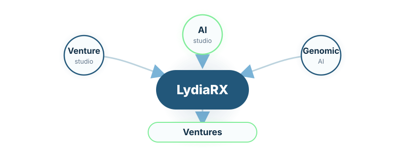

Swiss research-led venture studio
LydiaRX AG
Building venture vehicles for genomic AI, regulated agentic AI, and automated R&D.
LydiaRX AG is a Swiss research-led venture studio transforming genomic data programmes, AI infrastructure, secure collaboration architectures, and industrial research assets into focused companies, platforms, and partnerships for pharma, biotechnology, AI, and regulated enterprise markets.
Research assets converted into venture vehicles.
LydiaRX builds at the intersection of biomedical data, artificial intelligence, scientific automation, and regulated collaboration. The studio develops ventures around governed genomic data, genomic-clinical AI, pharmacogenomics, pharma R&D workbenches, secure omics infrastructure, and enterprise agentic AI.
The focus stays on markets where AI must be traceable, data must be protected, and scientific outputs must be defensible.

LydiaRX links venture formation, controlled AI infrastructure, and governed biomedical data programs into one venture-building model.
Built with investors, pharma, and research partners.
LydiaRX works with organisations that need venture formation, governed AI systems, secure biomedical collaboration, and technically defensible research infrastructure.